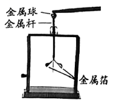
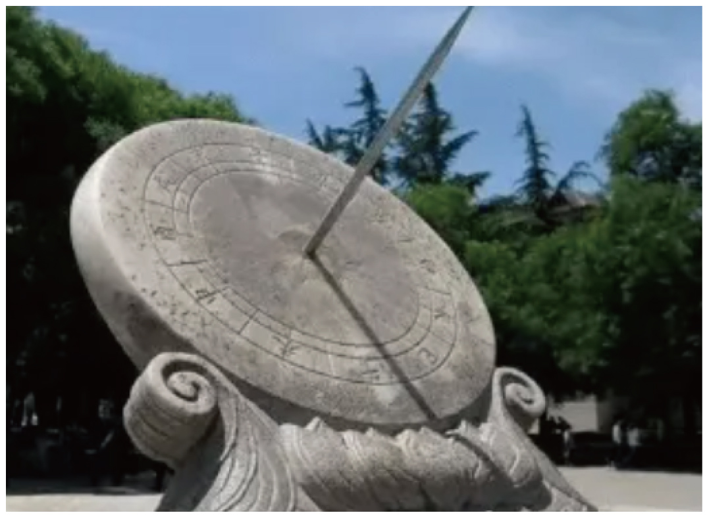
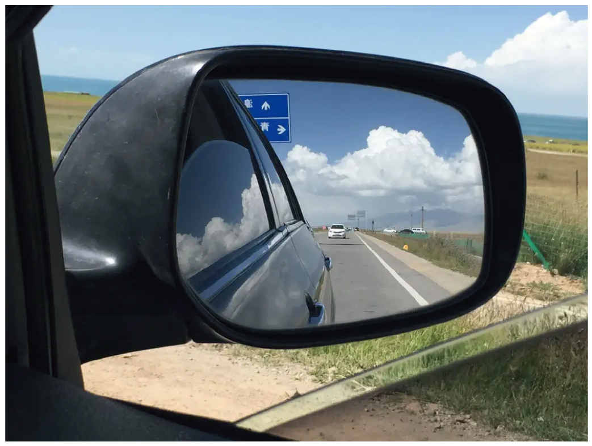
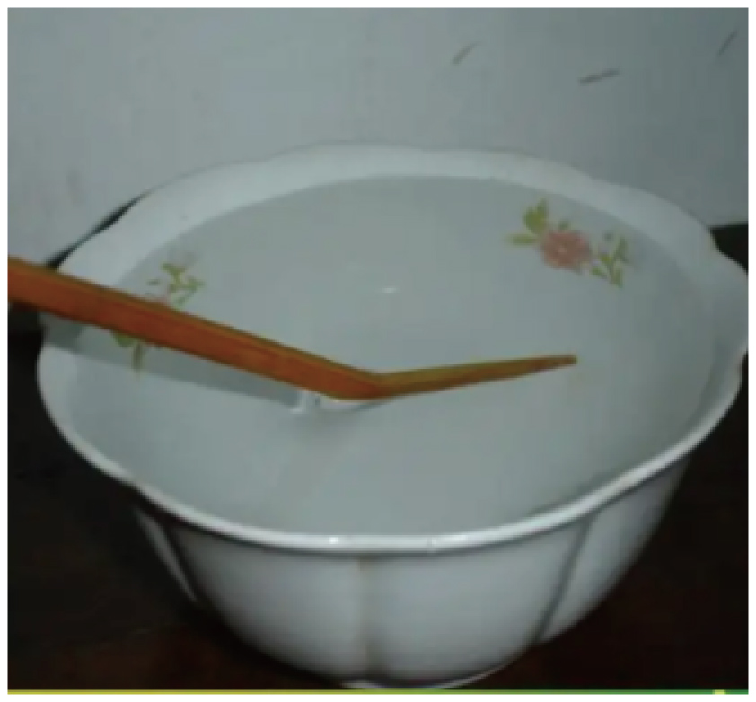
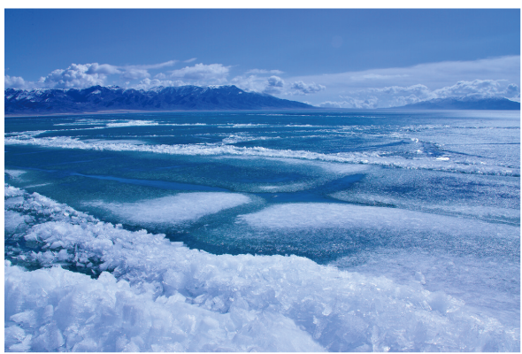
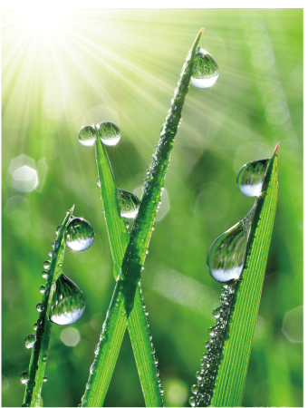
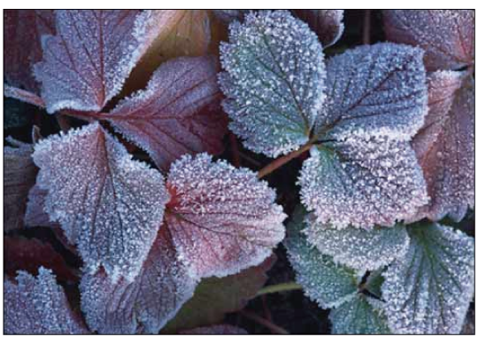
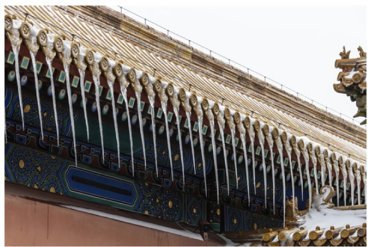
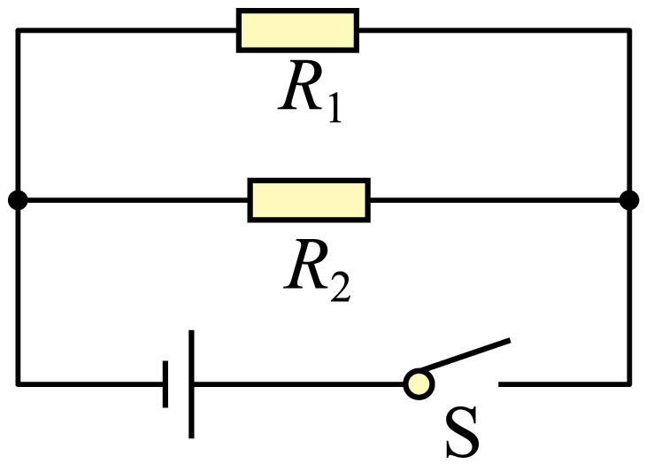

2022年北京市中考物理试题 · 选择题 第1、2、3、4、5题
1. 如图所示，用毛皮摩擦过的橡胶棒接触验电器的金属球时，金属球验电器的两片金属箔之所以张开是由于（ ）

A. 同种电荷相互排斥B. 异种电荷相互吸引
C. 同种电荷相互吸引D. 异种电荷相互排斥
2. 图所示的光现象中，由于光的折射形成的是（ ）
A.

日晷上呈现针的影子B. 
景物在镜中成像C. 鸟巢在水中形成倒影D.

筷子好像在水面处弯折3. 琴和瑟是我国传统的两种乐器，通过弹拨琴和瑟的弦使之发声。下列说法正确的是（ ）
A. 正在发声的琴弦，没有振动
B. 琴和瑟发出的声音，可以在真空中传播
C. 琴和瑟发出的声音音调相同时，它们的响度一定相同
D. 人们依据音色的不同，能区分出琴和瑟的声音
4. 图所示 物态变化实例中，由于熔化形成的是（ ）
物态变化实例中，由于熔化形成的是（ ）
A.

立春时节冰化成的水B. 
白露时节草叶上的露珠C.

霜降时节枝头上的霜D. 
冬至时节房檐上的冰挂5. 图所示的电路中，电阻阻值R1<R2。开关S闭合后，R1、R2两端的电压分别为U1、U2，通过R1、R2的电流分别为I1、I2。下列判断正确的是（ ）

A. U1>U2B. U1<U2C. I1>I2D. I1=I2